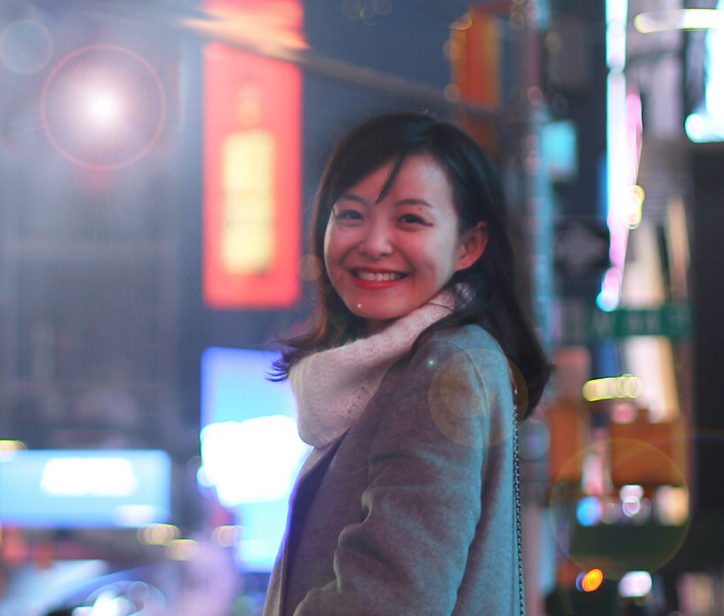

ABOUT ME
I'm a San Francisco Bay area based web designer & front‑end developer focused on crafting clean & user‑friendly experiences! Currently I am studying in Academy of Art University major in Web Design & New Media. I'm interested in all kinds of front-end development, but my major focus is on designing web, mobile & tablet interfaces. I also have skills in other fields like branding, icon design or user tests.
Earlier I was a full-time equity trader for 3 years in a broker company in Shanghai.
Work Experience
from 2007 to 2017
2013 Jul. till 2016 July (3 years)
QFII/RQFII Fund Equity Trader
Orient Securities, Shanghai
- Made equity trading strategy with broker clients and executed equity trading orders.
2013 Jan. till 2013 May. (5 months)
Assistant Associate
Ogilvy Public Relationship，Shanghai
-Used new media tools to manage media coverage and organize PR campaigns.
2012 Jan.– Dec. (1 year)
Freelancer based London
CBN China Business Network
-Took photos and wrote reports for given topics.
2008 (six months)
Travelling-Section Journalist Intern
Metro Express, Shanghai
-Published 29 reports and several photos on both websites and newspapers.
2007-2010 (3 years)
Chief Editor of The Hurricane
The Hurricane, a campus newspaper at Shanghai University
-Set up themes, wrote reports, created typographic designs, raised funds for publications.